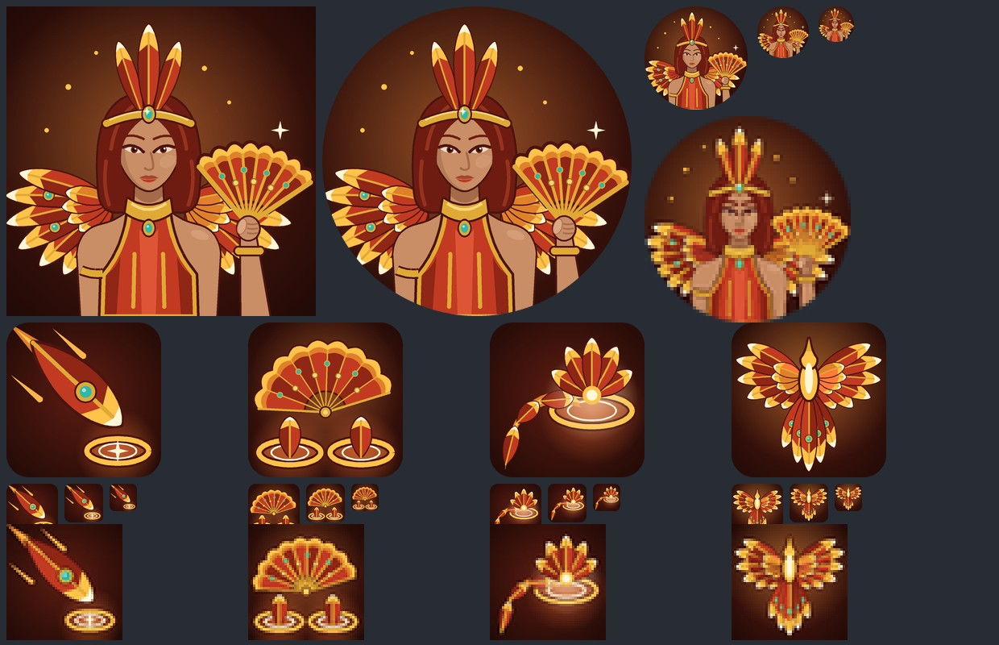
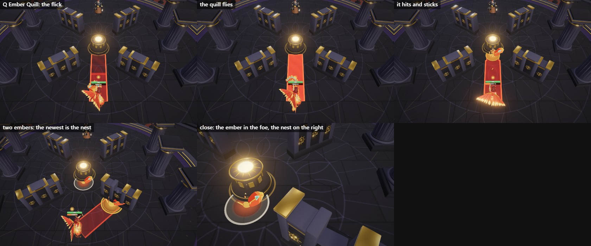
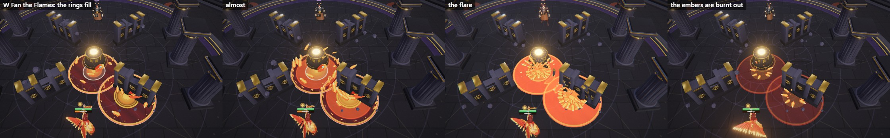
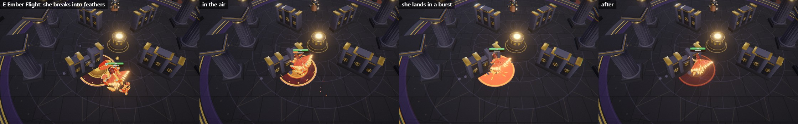
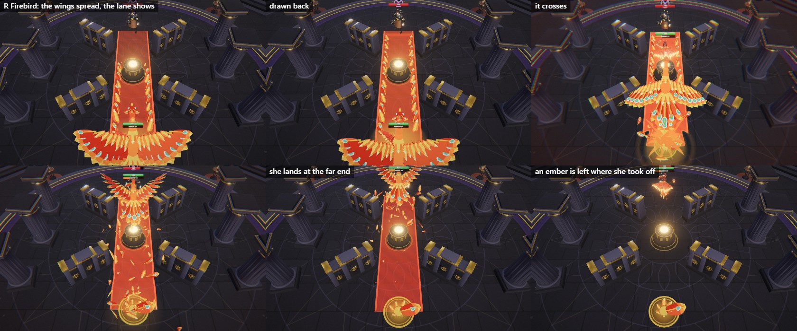
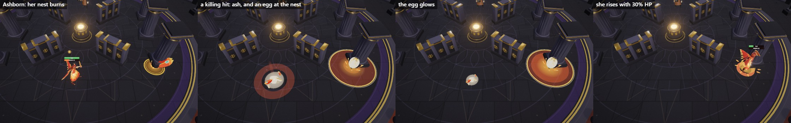

Hero 40, gate 4. Every picture is taken by the game itself in a real duel, from above as the game camera looks. The opponent is held still so only her spell shows.
The portrait square, round and small; then Ember Quill, Fan the Flames, Ember Flight and Firebird, each also at the small sizes the game uses.

She flicks her fan and one long feather flies. Where it stops it stays in the floor as an ember. The newest ember is her nest: taller, with a crown of flame and a gold ring.

Every ember's ring fills with turning feathers of flame for 0.8 s, then flares. The embers burn out.

She breaks into feathers, flies to an ember and lands in a burst.

Wings of fire spread for a second while the lane shows, then a great firebird crosses 12 m. An ember is left where she took off.

A killing hit with a nest burning: a pile of ash where she fell, an egg at the nest, and she rises there with 30% of her HP.
